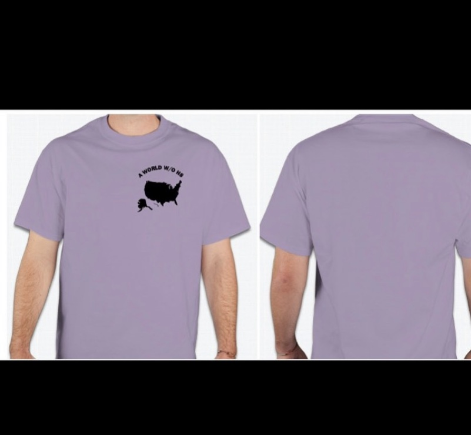
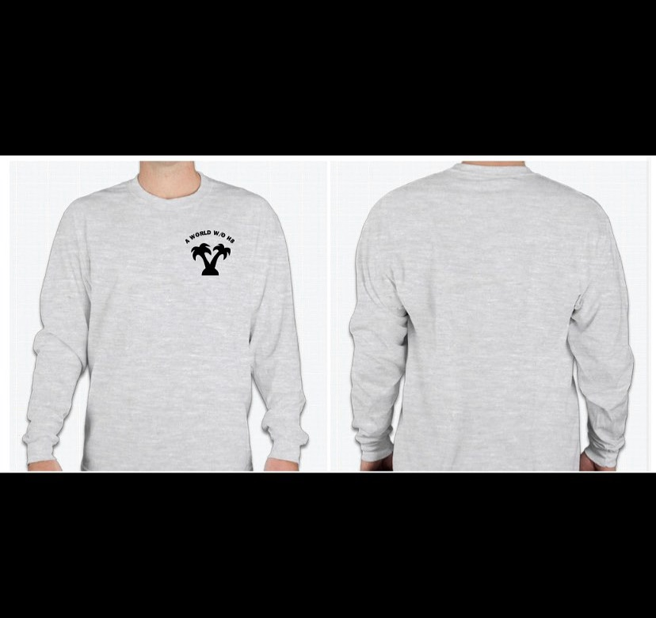
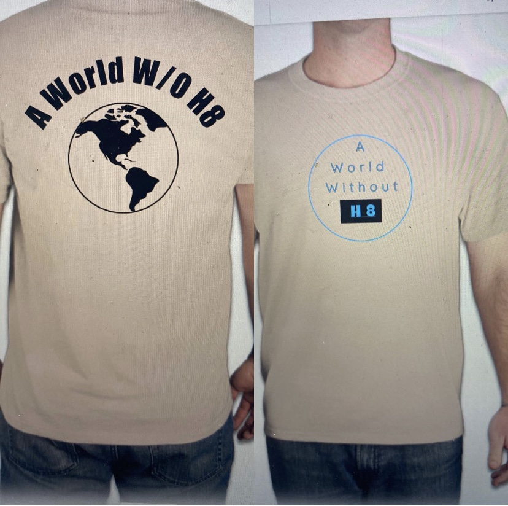
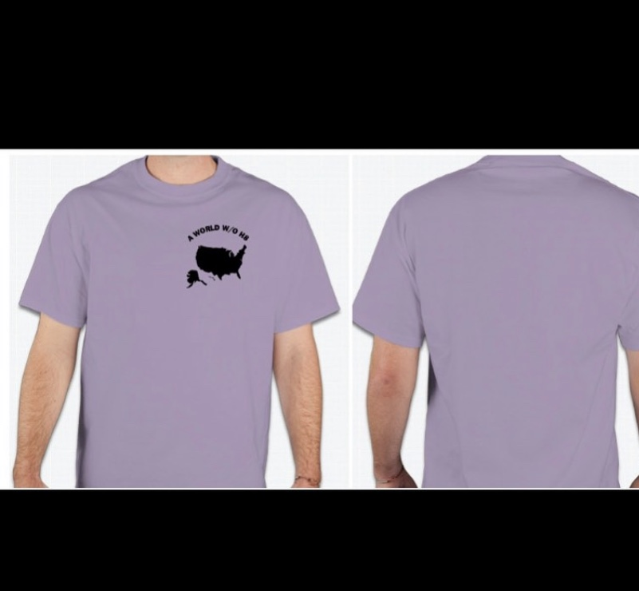
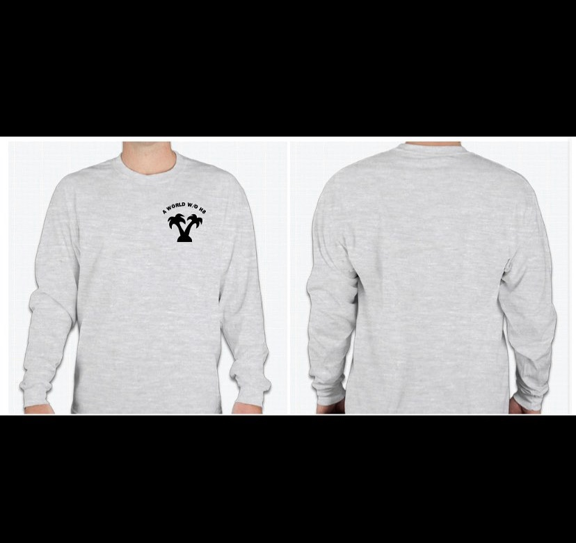
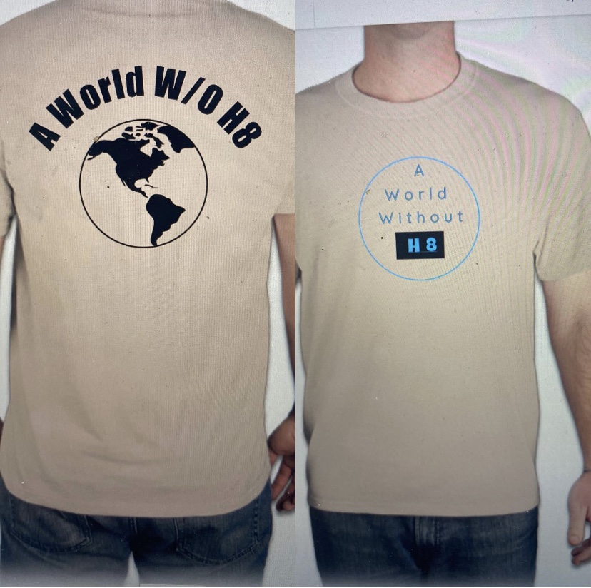

Shirt cost: $12.00
12 Shirts left in stock. (Short Sleeve Lavender USA Logo)
Shoulder-to-shoulder taping; double-needle stitching throughout; seamless body for a wide printing area; 1x1 ribbed collar.
5.6 oz 50% cotton, 50% polyester preshrunk jersey.
Oxford is 53% polyester, 47% cotton.
-------------------------------------------------------------------------------------------------------------------------

Shirt cost: $19.00
Sold Out. (Long Sleeve Gray Palm Tree Logo)
Double-needle coverstitched front neck
Shoulder-to-shoulder tape and seamless 1x1 ribbed collar
Double-needle stitched bottom hem
Ribbed cuffs with concealed seam
100% cotton preshrunk jersey
Ash is 98% cotton, 2% polyester; Athletic Heather is 90% cotton, 10% polyester
-------------------------------------------------------------------------------------------------------------------------

Shirt cost: $17.00
Sold Out. (Tan Short Sleeve World Logo)
HD fabric provides a superior printing canvas
Double-needle coverstitched front neck
Shoulder-to-shoulder tape and seamless 1x1 ribbed collar
Double-needle stitched bottom hem. Ribbed cuffs with concealed seam
100% cotton preshrunk jersey
Ash is 98% cotton, 2% polyester; Athletic Heather is 90% cotton, 10% polyester
-------------------------------------------------------------------------------------------------------------------------

Shirt cost: $18.00
Tan Long Sleeve World Logo
Double-needle stitching, taped neck and shoulders. Quarter-turned to eliminate center crease. Ultra tight knit surface.
6.1 oz 100% preshrunk cotton. Ash Grey is 99% cotton, 1% polyester, Sport Grey is 90% cotton, 10% polyester, Safety Green, Safety Orange, and Dark Heather are 50% cotton, 50% polyester.

Shirt cost: $12.00
12 Shirts left in stock. (Short Sleeve Lavender USA Logo)
Shoulder-to-shoulder taping; double-needle stitching throughout; seamless body for a wide printing area; 1x1 ribbed collar.
5.6 oz 50% cotton, 50% polyester preshrunk jersey. Oxford is 53% polyester, 47% cotton.

Shirt cost: $19.00
Sold Out. (Long Sleeve Gray Palm Tree Logo)
Double-needle coverstitched front neck Shoulder-to-shoulder tape and seamless 1x1 ribbed collar Double-needle stitched bottom hem Ribbed cuffs with concealed seam
100% cotton preshrunk jersey Ash is 98% cotton, 2% polyester; Athletic Heather is 90% cotton, 10% polyester

Shirt cost: $17.00
Sold Out. (Tan Short Sleeve World Logo)
HD fabric provides a superior printing canvas Double-needle coverstitched front neck Shoulder-to-shoulder tape and seamless 1x1 ribbed collar Double-needle stitched bottom hem. Ribbed cuffs with concealed seam
100% cotton preshrunk jersey Ash is 98% cotton, 2% polyester; Athletic Heather is 90% cotton, 10% polyester